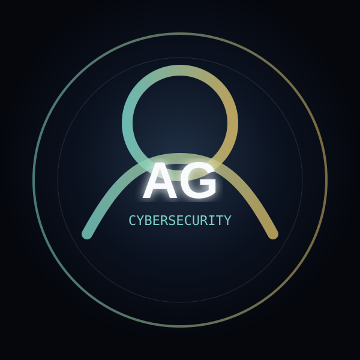

Security Portfolio Command Center
Focused on SOC operations, penetration testing fundamentals, web security, vulnerability reporting, and practical lab documentation.
About Ahmed
Security Skills
Experience Timeline
Professional Credentials
Selected credentials and achievements presented as visual proof of learning, practice, and academic progress. Click any card to preview details.
Security Projects
Awards, Hackathons & University Achievements
Dean’s Awards, CTF participation, hackathon participation, and academic mobility results.
Latest Write-ups
A Kali-inspired cybersecurity notebook for structured study notes, lab reports, tool references, exam preparation, and practical security reflections.
Security Report
A focused section for formal vulnerability research and authorized security documentation. Notes and articles stay in the Kali notebook above.
Contact Ahmed
Available for cybersecurity opportunities, SOC roles, internships, and penetration-testing related projects.
Professional Links
CyberBot Assistant
Ask about cybersecurity concepts, Linux commands, pentesting tools, SOC workflows, eJPT, Security+, or Ahmed’s CGPA, certificates, projects, awards, reports, CV, and links.